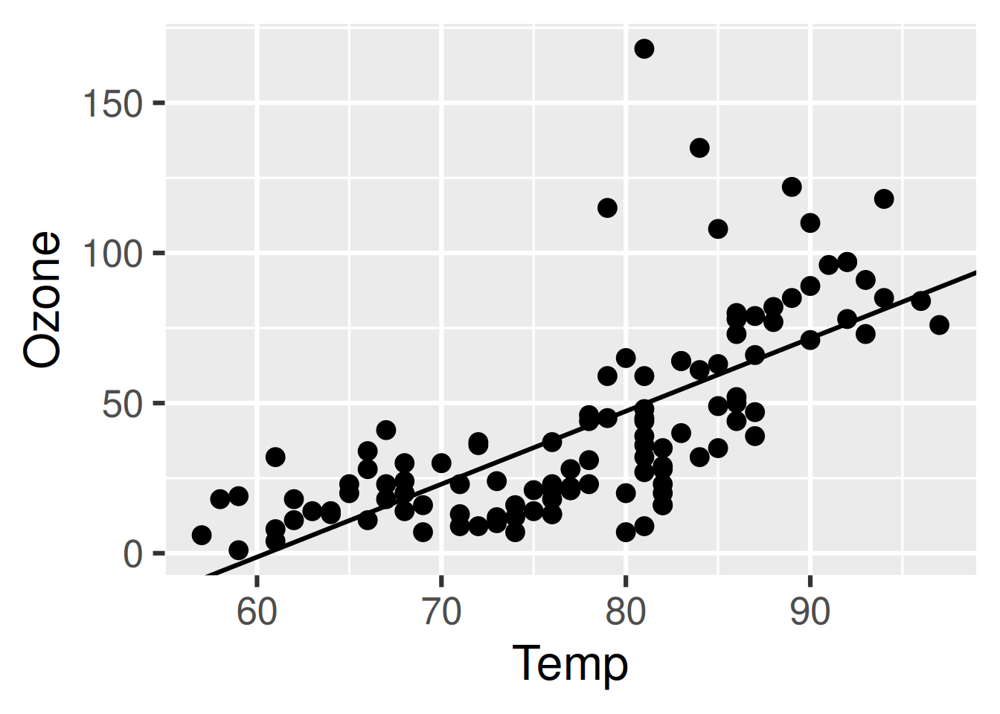

├── _targets.R
├── data.csv
├── R/
│ ├── functions.R2 A walkthrough to get started
This chapter walks through a short example of a targets-powered data analysis project. The source code is available at https://github.com/wlandau/targets-four-minutes, and you can visit https://rstudio.cloud/project/3946303 to try out the code in a web browser (no download or installation required). The documentation website links to other examples. The contents of the chapter are also explained in a four-minute video tutorial:
2.1 About this example
The goal of this short analysis is to assess the relationship among ozone and temperature in base R’s airquality dataset. We track a data file, prepare a dataset, fit a model, and plot the model against the data.
2.2 File structure
The file structure of the project looks like this.
data.csv contains the data we want to analyze.
Ozone,Solar.R,Wind,Temp,Month,Day
36,118,8.0,72,5,2
12,149,12.6,74,5,3
...R/functions.R contains our custom user-defined functions. (See the functions chapter for a discussion of function-oriented workflows.)
# R/functions.R
get_data <- function(file) {
read_csv(file, col_types = cols()) %>%
filter(!is.na(Ozone))
}
fit_model <- function(data) {
lm(Ozone ~ Temp, data) %>%
coefficients()
}
plot_model <- function(model, data) {
ggplot(data) +
geom_point(aes(x = Temp, y = Ozone)) +
geom_abline(intercept = model[1], slope = model[2])
}2.3 Target script file
Whereas files data.csv and functions.R are typical user-defined components of a project-oriented workflow, the target script file _targets.R file is special. Every targets workflow needs a target script file to configure and define the pipeline.1 The use_targets() function in targets version >= 0.12.0 creates an initial target script with comments to help you fill it in. Ours looks like this:
# _targets.R file
library(targets)
library(tarchetypes)
tar_source()
tar_option_set(packages = c("readr", "dplyr", "ggplot2"))
list(
tar_target(file, "data.csv", format = "file"),
tar_target(data, get_data(file)),
tar_target(model, fit_model(data)),
tar_target(plot, plot_model(model, data))
)All target script files have these requirements.
- Load the packages needed to define the pipeline, e.g.
targetsitself.2 - Use
tar_option_set()to declare the packages that the targets themselves need, as well as other settings such as the default storage format. - Load your custom functions and small input objects into the R session: in our case, with
source("R/functions.R"). - Write the pipeline at the bottom of
_targets.R. A pipeline is a list of target objects, which you can create withtar_target(). Each target is a step of the analysis. It looks and feels like a variable in R, but duringtar_make(), it will save the output as a file in_targets/objects/.
Start small
Even if you plan to create a large-scale heavy-duty pipeline with hundreds of time-consuming targets, it is best to start small. First create a version of the pipeline with a small number of quick-to-run targets, follow the sections below to inspect and test it, and then scale up to the full-sized pipeline after you are sure everything is working.
2.4 Inspect the pipeline
Before you run the pipeline for real, it is best to check for obvious errors. tar_manifest() lists verbose information about each target.
tar_manifest(fields = all_of("command"))
#> # A tibble: 4 × 2
#> name command
#> <chr> <chr>
#> 1 file "\"data.csv\""
#> 2 data "get_data(file)"
#> 3 model "fit_model(data)"
#> 4 plot "plot_model(model, data)"tar_visnetwork() displays the dependency graph of the pipeline, showing a natural left-to-right flow of work. It is good practice to make sure the graph has the correct nodes connected with the correct edges. Read more about dependencies and the graph in the dependencies section of a later chapter.
tar_visnetwork()2.5 Run the pipeline
tar_make() runs the pipeline. It creates a reproducible new external R process which then reads the target script and runs the correct targets in the correct order.3
tar_make()
#> + file dispatched
#> ✔ file completed [122ms, 2.89 kB]
#> + data dispatched
#> ✔ data completed [99ms, 1.35 kB]
#> + model dispatched
#> ✔ model completed [2ms, 110 B]
#> + plot dispatched
#> ✔ plot completed [11ms, 91.84 kB]
#> ✔ ended pipeline [420ms, 4 completed, 0 skipped]The output of the pipeline is saved to the _targets/ data store, and you can read the output with tar_read() (see also tar_load()).
tar_read(plot)
The next time you run tar_make(), targets skips everything that is already up to date, which saves a lot of time in large projects with long runtimes.
tar_make()
#> ✔ skipped pipeline [54ms, 4 skipped]You can use tar_visnetwork() and tar_outdated() to check ahead of time which targets are up to date.
tar_visnetwork()tar_outdated()
#> character(0)2.6 Changes
The targets package notices when you make changes to code and data, and those changes affect which targets rerun and which targets are skipped.4
2.6.1 Change code
If you change one of your functions, the targets that depend on it will no longer be up to date, and tar_make() will rebuild them. For example, let’s increase the font size of the plot.
# Edit functions.R...
plot_model <- function(model, data) {
ggplot(data) +
geom_point(aes(x = Temp, y = Ozone)) +
geom_abline(intercept = model[1], slope = model[2]) +
theme_gray(24) # Increased the font size.
}targets detects the change. plot is “outdated” (i.e. invalidated) and the others are still up to date.
tar_visnetwork()tar_outdated()
#> [1] "plot"Thus, tar_make() reruns plot and nothing else.5
tar_make()
#> + plot dispatched
#> ✔ plot completed [13ms, 93.68 kB]
#> ✔ ended pipeline [267ms, 1 completed, 3 skipped]Sure enough, we have a new plot.
tar_read(plot)
2.6.2 Change data
If we change the data file data.csv, targets notices the change. This is because file is a file target (i.e. with format = "file" in tar_target()), and the return value from last tar_make() identified "data.csv" as the file to be tracked for changes. Let’s try it out. Below, let’s use only the first 100 rows of the airquality dataset.
write_csv(head(airquality, n = 100), "data.csv")Sure enough, raw_data_file and everything downstream is out of date, so all our targets are outdated.
tar_visnetwork()tar_outdated()
#> [1] "file" "plot" "data" "model"tar_make()
#> + file dispatched
#> ✔ file completed [122ms, 1.88 kB]
#> + data dispatched
#> ✔ data completed [99ms, 1.00 kB]
#> + model dispatched
#> ✔ model completed [2ms, 110 B]
#> + plot dispatched
#> ✔ plot completed [13ms, 92.83 kB]
#> ✔ ended pipeline [424ms, 4 completed, 0 skipped]2.7 Read metadata
Performance
See the performance chapter for options, settings, and other choices to make the pipeline more efficient. This chapter also has guidance for monitoring the progress of a running pipeline.
By default, the target script is a file called
_targets.Rin the project’s root directory. However, you can set the target script file path to something other than_targets.R. You can either set the path persistently for your project usingtar_config_set(), or you can set it temporarily for an individual function call using thescriptargument oftar_make()and related functions.↩︎target scripts created with
tar_script()automatically insert alibrary(targets)line at the top by default.↩︎In
targetsversion 0.3.1.9000 and above, you can set the path of the local data store to something other than_targets/. A project-level_targets.yamlfile keeps track of the path. Functionstar_config_set()andtar_config_get()can help.↩︎Internally, special rules called “cues” decide whether a target reruns. The
tar_cue()function lets you suppress some of these cues, and thetarchetypespackage supports nuanced cue factories and target factories to further customize target invalidation behavior. Thetar_cue()function documentation explains cues in detail, as well as specifics on howtargetsdetects changes to upstream dependencies.↩︎We would see similar behavior if we changed the R expressions in any
tar_target()calls in the target script file.↩︎